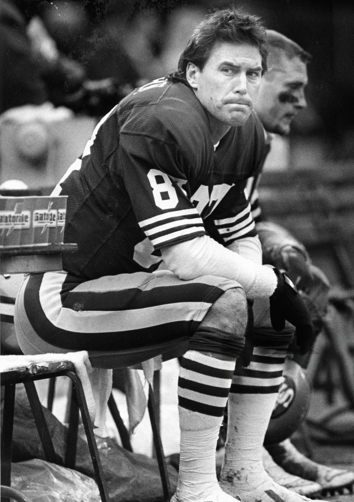

Dwight Clark
A tenth round pick who answered the wrong phone call, then jumped higher than anybody thought he could and started a dynasty.
The Dwight Clark Story
Ask anybody who grew up a 49ers fan to name one play, and you already know the answer. It's a skinny receiver in the back of the end zone at Candlestick, stretched all the way out, fingertips on the ball. That was Dwight Clark. And the crazy part is that he almost never got here at all.
He was born in Kinston, North Carolina, on January 8, 1957, and played quarterback at Garinger High School in Charlotte. Clemson moved him to wide receiver, and he wasn't exactly a star there. Thirty three catches in his whole college career. Nobody was building a draft board around him.
Then came the phone call. In the spring of 1979, Bill Walsh flew to Clemson to work out Steve Fuller, the Tigers quarterback, who happened to be Clark's roommate. Clark answered the phone on his way out the door to play golf and got talked into staying to catch passes for Fuller. Walsh came to see the quarterback and left thinking about the receiver.
The 49ers took him in the 10th round, 249th overall. Some people in the building thought it was a wasted pick on a guy who should have been an undrafted free agent. They were wrong by a mile.
He caught 18 balls as a rookie. In 1980, with Joe Montana starting to take over the offense, he caught 82 for 991 yards. In 1981 he caught 85 for 1,105 and went to his first Pro Bowl, and the 49ers went from 6 and 10 to 13 and 3.
That season ended with the play. January 10, 1982, the NFC Championship at Candlestick against Dallas, third and 3 from the Cowboys 6, 58 seconds left, down 27 to 21. Montana rolled right with the Dallas rush in his face and threw it high toward the back line. Clark went up over Everson Walls and came down with it. Ray Wersching kicked the extra point, 28 to 27, and two weeks later the 49ers won their first Super Bowl.
He wasn't a one play guy, either. In the strike shortened 1982 season he led the whole NFL with 60 catches in nine games, made first team All Pro and went to a second Pro Bowl. He was big for a receiver, he was tough over the middle, and he caught everything Montana threw near him.
He won a second ring after the 1984 season, when the 49ers went 15 and 1 and beat Miami in Super Bowl XIX at Stanford Stadium. He played through 1987 and finished with 506 catches, 6,750 yards and 48 touchdowns, every one of them in red and gold. The 49ers retired number 87 in December 1988.
He never really left. He opened Clark's By The Bay in Redwood City, came back to the front office and climbed to general manager of the 49ers in 1998, then ran the expansion Cleveland Browns as their first general manager before resigning in 2002. Later he was back on Bay Area TV, breaking down 49ers games after the final whistle.
In March 2017 he told everybody he had ALS. He said he suspected football caused it. That October the 49ers flew more than 30 of his old teammates to Levi's Stadium for Dwight Clark Day, because when the team asked him what he wanted, he said he just wanted to see his teammates one more time.
He died on June 4, 2018, in Whitefish, Montana. He was 61. Four months later the 49ers unveiled a statue of The Catch outside Levi's Stadium, Montana throwing and Clark reaching, and that's where he'll be for as long as there's a team in this town.
What He Meant to Us
I can't think of Dwight Clark without seeing him up in the air at Candlestick, stretched out over Everson Walls, fingertips on the ball. Nobody I know remembers anything else about that day first. Not the score, not the drive. Just Dwight, way up there, higher than anybody thought he could get.
And what I love is that he was never supposed to be there. A tenth round pick who caught 33 balls in college, who only got noticed because he picked up the phone on his way to play golf and got talked into catching passes for his roommate. Bill Walsh came to see the quarterback. He left with the guy who'd change the franchise.
People forget he was a great player, too, not just a great moment. He led the whole league in catches in 1982, made first team All Pro, and was the tough possession guy Montana trusted over the middle. Two weeks after The Catch he fell on the onside kick in the Super Bowl to seal the first ring. He kept ending up where the ball was.
Dwight Clark Day in 2017 wrecked me. He was already weak from ALS, the 49ers flew in more than 30 of his old teammates because that's all he asked for, and he stood up there and thanked everybody but himself. When he died the next June, it felt like losing the guy who started everything.
Every time I walk up to Levi's now and see the statue, Joe throwing, Dwight reaching, I slow down a little. That's the moment this whole thing started. Number 87 is up there forever, and he earned every inch of it.
Why He Was Clutch
Clutch for most players means a stat line. For Dwight Clark it means one moment that turned an entire franchise. Before The Catch, the 49ers had never been to a Super Bowl. After it, they won five in fourteen years.
And look at who he did it against. Dallas owned the 1970s. The Cowboys had knocked the 49ers out of the playoffs three straight years earlier in the decade, and they were up six with under a minute left. Clark had already scored once that day on a 20 yard touchdown, and he finished with 8 catches, 120 yards and 2 scores. When the season was on the line, the ball went to the guy who was supposed to be the second read, and he made it work.
Two weeks later in Pontiac, the Bengals were trying an onside kick to get one last chance at a comeback in Super Bowl XVI. Clark was the one who fell on it. Even in the biggest games, he kept ending up where the ball was.
Clutch Moments
- January 10, 1982
The Catch
NFC Championship at Candlestick, 49ers down 27 to 21, third and 3 from the Dallas 6 with 58 seconds left. The call was Sprint Right Option, and Freddie Solomon was the first read. Montana rolled right with the rush closing and threw it high to the back of the end zone. Clark leaped over Everson Walls and caught it with his fingertips to tie the game, Wersching made it 28 to 27, and Eric Wright's tackle on Drew Pearson and a strip sack on the next drive finished Dallas off. Clark had also caught a 20 yard touchdown in the second quarter. Eight catches, 120 yards, two touchdowns.
- January 24, 1982
Falling on the onside kick in Super Bowl XVI
The 49ers beat Cincinnati 26 to 21 at the Pontiac Silverdome for their first championship. Clark caught 4 passes for 45 yards, including a 17 yarder on a second quarter scoring drive, and when the Bengals tried an onside kick late, Clark recovered it so the 49ers could run out the clock.
- 1982 season
The best receiver in football
In a season cut to nine games by the players strike, Clark led the NFL with 60 catches for 913 yards and 5 touchdowns. He made first team All Pro and his second straight Pro Bowl, and Paul Zimmerman of Sports Illustrated named him his Player of the Year.
- January 20, 1985
Ring number two at Stanford Stadium
The 15 and 1 49ers routed Dan Marino and Miami 38 to 16 in Super Bowl XIX, a home game on the Peninsula. Clark caught 6 passes for 77 yards and had his second championship.
- December 11, 1988
Number 87 goes up for good
The 49ers retired Clark's number 87 in a ceremony less than a year after his final game. Nobody has worn it since.
- October 22, 2017
Dwight Clark Day
Already weakened by ALS, Clark spoke to the crowd at halftime of a game against, of course, Dallas. The 49ers had flown in more than 30 of his old teammates, Vin Scully narrated the tribute video, Montana introduced him, and every fan got a shirt with The Catch over his number 87.
- October 21, 2018
The Catch, in bronze
Four months after Clark died, the 49ers unveiled a statue of The Catch outside Levi's Stadium, Montana throwing and Clark reaching for the ball, so the play is the first thing fans see on the way in.
The Highlights
What They Said About Clark
“We'd never thrown the ball to Dwight on that play, at all.”
“It's humbling, really. I feel honored people are still talking about it, 25 years later.”
“I've been asked if playing football caused this. I don't know for sure. But I certainly suspect it did.”
“In 1979, he made this team into a family, and 40 years later, he is still taking care of me.”
“I'm heartbroken to tell you that today I lost my best friend and husband.”
Career Stats
| Year | Team | G | GS | Rec | Yds | Avg | Lng | TD |
|---|---|---|---|---|---|---|---|---|
| 1979 | SF | 16 | 3 | 18 | 232 | 12.9 | 30 | 0 |
| 1980 | SF | 16 | 12 | 82 | 991 | 12.1 | 71 | 8 |
| 1981 | SF | 16 | 16 | 85 | 1105 | 13.0 | 78 | 4 |
| 1982 | SF | 9 | 8 | 60 | 913 | 15.2 | 51 | 5 |
| 1983 | SF | 16 | 13 | 70 | 840 | 12.0 | 46 | 8 |
| 1984 | SF | 16 | 14 | 52 | 880 | 16.9 | 80 | 6 |
| 1985 | SF | 16 | 14 | 54 | 705 | 13.1 | 49 | 10 |
| 1986 | SF | 16 | 14 | 61 | 794 | 13.0 | 45 | 2 |
| 1987 | SF | 13 | 3 | 24 | 290 | 12.1 | 40 | 5 |
| Career | 134 | 97 | 506 | 6750 | 13.3 | 80 | 48 |
1982 was cut to nine games by the players strike. Clark led the NFL in catches that season. Scroll the table sideways on a phone.